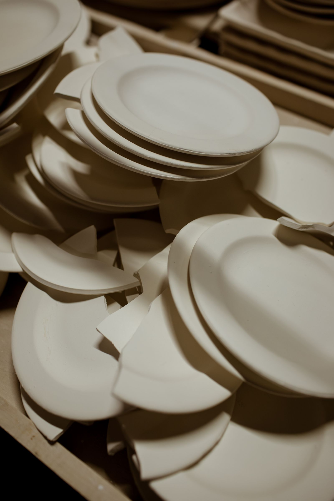
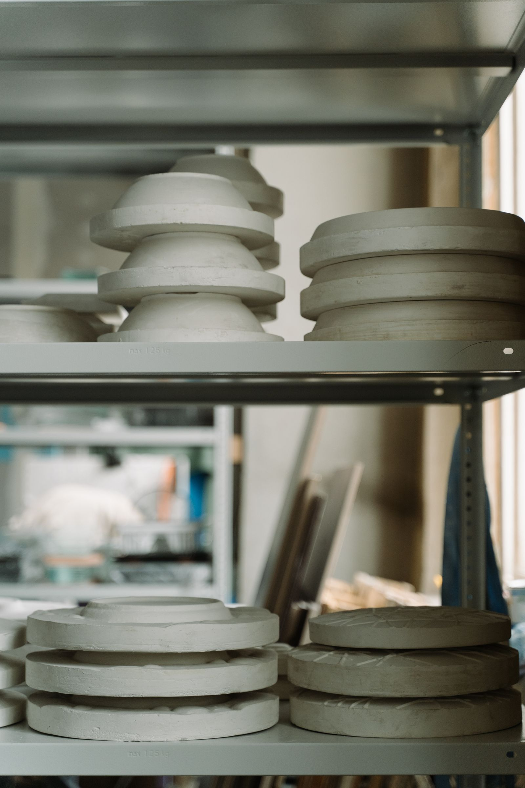
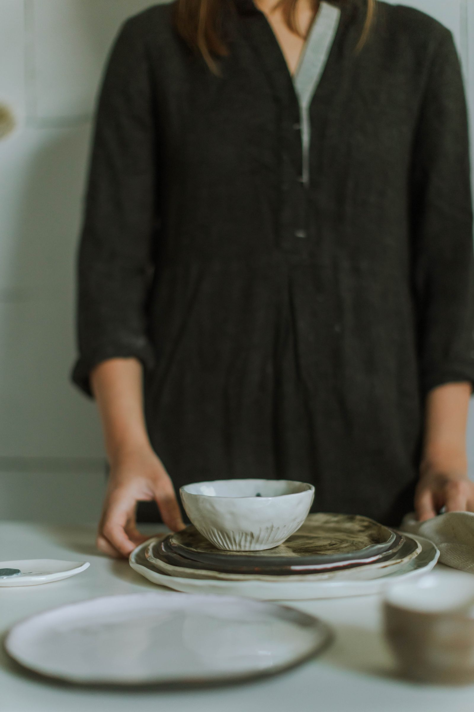

Iniciación al torno
Cuatro sesiones de dos horas, los jueves por la tarde. Se centra el barro, se levantan cilindros y, con suerte, sale una taza. Lo que hagas se cuece y te lo llevas a las cinco semanas.
- Sesiones
- 4 × 2 h
- Plazas
- 6
- Precio
- 120 €
Taller de gres · Ponteceso, A Coruña · desde 2013
El barro encoge al secar y vuelve a encoger al cocer. Un doce por ciento, más o menos, según la pasta y el día. Trabajar aquí es aprender a contar con eso: cada pieza se levanta un poco más grande de lo que va a ser.
01 La merma
Esta es la razón por la que un encargo tarda semanas y por la que dos piezas nunca son idénticas. La regla no se mueve: la que encoge es la jarra.
Recién hecha, el mismo día
Acaba de salir del torno. Está blanda, pesa casi el doble de lo que pesará y no se puede ni coger por el asa.
02 Los esmaltes
Cada uno tiene su prueba colgada en la pared del taller, con la fecha y la temperatura. Estos ocho son los que se repiten; el resto se quedaron en la pared.
CE-04
Celadón de ceniza
Satinado · 1240 °C
AR-11
Arena mate
Mate · 1240 °C
HI-02
Hierro rojo
Brillante · 1240 °C
PI-07
Pizarra húmeda
Satinado · 1240 °C
LE-01
Leche
Brillante · 1240 °C
PA-09
Paja quemada
Mate · 1240 °C
MA-03
Marea
Satinado · 1240 °C
NE-05
Negro de forja
Mate · 1240 °C
Ninguno lleva plomo ni cadmio y todos van a lavavajillas. El color cambia un poco de hornada a hornada: es esmalte hecho en cubo, no pintura industrial.
03 Las piezas
| Pieza | Medida | Precio |
|---|---|---|
| Taza de desayuno | 9,2 cm · 330 ml | 14 € |
| Cuenco hondo | 16 cm de boca | 18 € |
| Plato llano | 26 cm | 22 € |
| Plato hondo | 22 cm | 24 € |
| Jarra de agua | 19,4 cm · 1,2 litros | 32 € |
| Fuente grande | 38 × 24 cm | 54 € |
Precios de muestra para esta demostración. Las piezas se venden en la tienda del taller; no hay tienda en línea porque la cerámica viaja mal y prefiero que la cojas antes de comprarla.

04 Encargos

05 Cursos
Cuatro sesiones de dos horas, los jueves por la tarde. Se centra el barro, se levantan cilindros y, con suerte, sale una taza. Lo que hagas se cuece y te lo llevas a las cinco semanas.
Una tarde, sin torno: churros y placa. Es la forma más antigua y la más agradecida para empezar. Se sale con dos piezas hechas.
Cocción rápida en el patio, con humo y choque térmico. Se rompe alguna pieza, forma parte. Hay que venir con ropa que pueda mancharse.
Material y cocción incluidos. Las plazas se guardan con el pago; si no puedes venir, avisa con cuarenta y ocho horas y se pasa a otra fecha. A partir de catorce años.
06 El taller
El taller lo llevamos Maruxa Rañal, que tornea, y Lois Barca, que se ocupa del horno y de los esmaltes. Abrimos en 2013 en un bajo del Forno Vello, y seguimos ahí porque la nave tiene la altura que pide el horno grande.
La tienda está en el mismo sitio que el taller: si vienes en horario de trabajo, verás la mesa como está, que no siempre es bonita.
Comprobando el horario…
| Lunes | Cerrado |
|---|---|
| Martes | 10:30 – 14:00 |
| Miércoles | 10:30 – 14:00 |
| Jueves | 10:30 – 14:00 · 17:00 – 20:00 |
| Viernes | 10:30 – 14:00 · 17:00 – 20:00 |
| Sábado | 11:00 – 14:00 |
| Domingo | Cerrado |
Notas de muestra, escritas para esta demostración. No proceden de ninguna plataforma ni de ningún cliente real.
«Pedimos veinticuatro platos para el restaurante y tardaron nueve semanas, como habían dicho. Llevamos tres años sin romper la vajilla entera y cuando pasa, la reponen.»
«Fui al curso de torno pensando que saldría una taza y salieron cuatro cosas raras. Volví al siguiente.»
